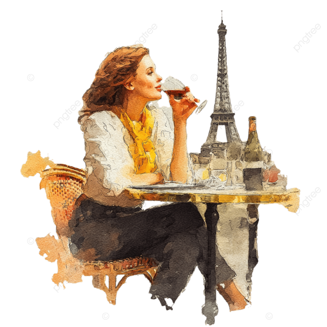

BIENVENIDOS A CASA
Mon Amour nació de una idea sencilla: que el café puede ser una forma de decir “te quiero”.
Inspirada en los cafés franceses, esta cafetería es un rincón para los que aman con el corazón lleno y los ojos medio soñadores. No importa si vienes solo, acompañado o recordando a alguien… aquí todo se trata de conectar. Cada bebida tiene una historia, un nombre que te dice algo. Hay detalles escondidos en cada rincón: frases que te hacen pensar, cartas olvidadas, y un ambiente que te abraza suavecito. Porque Mon Amour no es solo café. Es un espacio para sentir, escribir, llorar bonito, reír sin prisa o simplemente mirar por la ventana mientras todo pasa. Bienvenido. Si tienes corazón, aquí tienes casa.. 